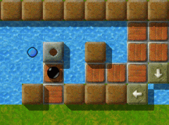
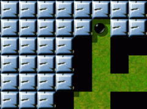
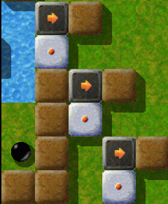

Level of the MonthEach month, we take a closer look at excellent Enigma levels. Excellent levels are those with the highest average user ratings and the greatest number of ratings altogether. Thus it is your vote that determines the Level of the Month. So please rate the levels you play and do not forget to submit your ratings together with your scores at the end of each month. You can find all previous Levels of the Month in our archive. May 2008: “Pleasure Garden” by Jacob ScottI've got a bit of a conflicted relationship with “Pleasure Garden”: If all's going well, it's a pleasure indeed to go for a stroll in the garden, but if I have a bad day, it seems to me more like a construction site - just as if it were still in the planning stage but not yet complete. What are the single components representing then - and where have all the “flowers” gone? 
Enigma VI # 95
In the beginning a few planks, which are stored behind some wire-netting fence, have to be laid - to form the border for the “small fountain” in the lake. Until I discovered how to do it, I must have accidentally banged my head with one of those planks. ;-) Nevertheless, that's done. So off we go to the next part.

The fountain in the lake.
Messed it up again! Where's the gardener?! What's going on? Toolshed, “mission control”, lots of trellises and three unfinished “large fountains”, but only two borders. Fortunately they're not overgrown with tendrils, otherwise it would be impossible to get through to the toolshed or the “mission control”. But before we get in there, we'll have to take care of the “fountains”. So, now the toolshed's open. Oh boy, it's pretty dark inside this shack, too dark to see where you're going. Ah! here's the tool. Let's put it in the bag, then off we go next door to operate the switch, and now it's time to leave this part of the garden behind. Now that we've got our tool, we can go on. We need it badly to uncover our path. Oh, it's surrounded by deep ditches! How convenient! In the following area of the garden we come across some labyrinth, which strangely enough is in good repair. At least it allows us a peek at the “flowers”. Then let's see what comes next. The two exits from this labyrinth lead to an area where road work is taking place. Demolition is being carried out. But before we start the fireworks, two planks have to be laid across a pit. One of them's leaning against a wall, the other's stored behind a fence. … That's that! “I really get a lot of pleasure from solving such a fantastic level!”So here I am to say something about “Pleasure
Garden”. All right then. It's quite a while ago that I dealt with it. I
recall it as a fantastic level. As far as I know there had not been
too many players who had solved the level at the time, when I was playing it.
Had it not yet been discovered by others or had nobody dared to take it on so
far? Anyway, I tried, and once again I was thoroughly convinced that it couldn't
be that difficult.

In the quarry -
Discovering the path Moving blocks to the right place. Opening the door. Because
of the breakable stones to the left: probably finding a hammer. Breaking the
stones. Done. That's what I thought. Moving blocks seemed to work. After a few
tries I got it. Door opens. Hammer??
Sure thing! Well embedded in a bunch of one-way-stones. And
which of the blue lights is in charge? Believe me, you'll always choose the
wrong one, guaranteed. The hammer-light's the other one. But never mind, it
still works out well.
So back again, knocking down stones. Lotsa stones. Did you
unlock the door? Well done. Go on. A mini-labyrinth. Not much of a problem for
experienced lab-runners.
Oh dear. A minefield. The original Oxyd manual says: bombs
can be ignited by pushing stones over them. Great. If I'll move one of the
blocks within here, the whole room will blow up. I thought as much.
But these accursed bombs won't work this way, neither in the
lower area, which really is a pleasure, nor in the upper area where it would
come in quite handy. But first of all you have your brains, and secondly there's
a fuse. After replaying the level another time I finally got the bomb
thing.
A boulder. Well, well! I got it moving and listened. Listened
to the sound of decline of the garden's pleasures, so to say. Restart. This time
I was faster. Light up all oxyds within reach, then hurry on. Mirrors. Great. I
like mirror levels. Supposing I can take my time. Which wasn't true in this
case. I believe I had to restart the level at least another 5 times before I
finally lit up the last oxyd. It was fantastic. And once again I was being asked
if everything's alright with me. Why can't this man understand, that I really
get a lot of pleasure from solving such a fantastic level?!

Industrial accident:
Hopefully the life insurance pays off! By the way, I could achieve quite a decent score back then.
This morning it took me even more time just to handle the blocks. After all it's
all just a matter of practise.
We enter another part of the garden. What's that? Finally: behind some mound we actually catch sight of our “flowers”, pleasantly lined up. Unfortunately there's no direct approach. Before we can get out of here, several of these idle bulldozers must be started and driven to their points of destination. (Whoever finds it difficult to do so, might want to get some practise with “Boulder-Puzzle” (IV - #8) by the same author.) If you're getting bulldozed, it actually isn't that dramatic, if you've acted with foresight in the previous area. If not, it's time for Shift-F3 again. (Who would think of something like this the first time? Not me.) Eventually we've got our little repairs done here too. Now we reach the last part of the labyrinth. The way that leads to the “flowers” seems to be obvious - too obvious? After a bit of wandering around we arrive at the last (Really the last? Somehow I can't quite believe it.) obstacle: One of these bulldozers, stopped by a stone, blocks our way. Behind it the first “flowers” and a sign, that can't be deciphered from here. Well, let's get the bulldozer going and roll away the stone. Wait a minute! Have a closer look to the right first. There's a whole company of bulldozers waiting for the order to go into action. Also there's a greenhouse light with a switch nearby. What's going on?? It's not possible to get to the other side and examine the region more closely. So let's see what happens. …

The giant clockwork - a detail
Let's start work and push the stone aside. All right, the way's cleared. Now we can read what's written on the sign: “Quickly!” Oh no! Stress of examinations close to the ending. But now that we've finally reached our “flowers”, we won't be that badly off. That's what you think! Count the “flowers” first! Didn't you notice the small passage to the right? And did you forget about the greenhouse light and these pesky bulldozers? “:->” or “.'P” or even “-/-”, I never feel very well from this point on. So quickly off into the greenhouse to adjust everything so that this “flower” is provided with light as well. By the way, why has it actually been hidden away like this? Perhaps it's no “flower” at all, but some kind of plant which the gardener has reserved for himself? No, of course not what you're thinking of! … However, we've got no time for such things. Let's quickly pick all of the “flowers” within reach. One remains, but as I said before, the gardener will collect it, when it has received enough light. Actually the single tasks, you'll have to carry out in the “Pleasure Garden”, aren't that difficult. But somehow the mass of problems is a problem. And the final countdown's really pretty tough. I can't remember how often I messed things up in the greenhouse or picked the wrong “flowers” at the wrong time. Though I'm really not fond of levels which demand speed (Sorry! Actually I can't stand them), in my opinion the final part of “Pleasure Garden” in contrast to the other parts adds much to the pleasure of the level as a whole. With some delay, here are the comments of the author:I wrote “Pleasure Garden” as my first serious attempt at emulating the
style of the original Oxyd labyrinths. Usually they comprised many
interconnected rooms with no obvious way to complete it, or even what
to do next. However, my level started becoming too linear, though I
did nothing about this. I was happy just to build a level linking
together some of my favorite types of puzzles. Because the level
became so linear, I ended it with a more reasonable number of
segments, not quite as large as I had originally planned (I
constructed levels in the intended style later).
I wanted to include the types of puzzles I always used to enjoy in the
Oxyd games: boulder puzzles, bomb puzzles, shogun challenges, and even
a oneway maze. I designed the level to be a sort of journey, through
a bunch of interesting challenges, with one final challenge at the
end. As it turns out, there is a way to make this ultimate puzzle a
little easier, but given the difficulty of the rest of the level (and
the time required to get that far) I decided not to change it.
Overall, I wrote it such that each part would be comparable to an easy
individual level by itself, but that together the different areas
would mesh together nicely. For this reason, most of the parts use
consistent color schemes in fairly open environments.
I think “Pleasure Garden” turned out fairly well. At the time I wrote
it it was probably one of the harder levels I had written (not at all
true anymore), and it was really an experiment in what I could put
together into one level without it becoming too much. Compared to
some more recent levels (of mine, e.g.), “Pleasure Garden” is fairly
easy, but I think it still retains its sense of a journey through an
open, inviting landscape.
Definitely “Pleasure Garden” has taken its seat high up in my private Top 10. Many thanks to Jacob Scott for this terrific level. NObby Dear reader, we have a constant need for articles from you about Enigma's great levels. Please, send us any articles, even comments, you write to: enigma-devel@nongnu.org We're particularly interested in articles about the following levels:
Many thanks in advance, only your help can keep the LotM alive! Your Enigma Team |